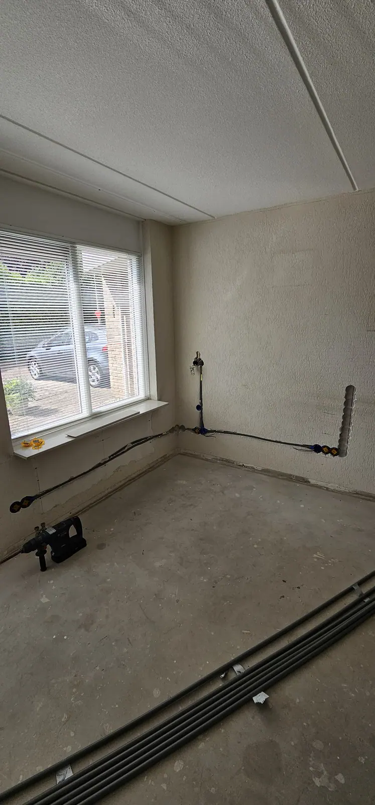

Elektricien in Emmen en omgeving
Groepenkast, meterkast, laadpaal, inductie of een storing? Oosterveld is je elektricien in Emmen en omgeving: veilig, netjes en met duidelijke afspraken.
Veilige elektra voor woning en bedrijf
Oosterveld verzorgt alle elektrotechnische werkzaamheden in woningen en bedrijfspanden in Emmen en omgeving. Veiligheid staat voorop: we werken volgens de geldende normen (NEN 1010), leggen uit wat we doen en laten alles netjes achter.
- Meterkast en groepenkast vervangen of uitbreiden
- Volledig kabelwerk bij nieuwbouw en verbouw
- Extra groepen aanleggen
- Laadpaal aansluiten
- Inductiekookplaat en kookgroep aansluiten
- Stopcontacten, verlichting en bekabeling
- Storingen opsporen en verhelpen

Wat we voor je doen
Groepenkast of meterkast
Vervangen, uitbreiden of aanpassen, bijvoorbeeld voor inductie, een laadpaal of een thuisbatterij.
Lees meer →Laadpaal aansluiten
Aansluiten van een laadpaal voor thuis of op het bedrijf, inclusief de aanpassingen in de meterkast.
Inductie en kookgroep
Veilig aansluiten van een inductiekookplaat, inclusief de benodigde groep.
Volledig kabelwerk
Complete bekabeling voor nieuwbouw en verbouw: van leidingen en aansluitpunten tot afmonteren.
Stopcontacten en verlichting
Extra wandcontactdozen, nieuwe bekabeling, spots en vervangen van schakelmateriaal.
Storing verhelpen
Valt de aardlekschakelaar uit, is er kortsluiting of is er geen stroom? We zoeken uit waar het aan ligt.
Elektra bij badkamer en keuken
Bij een verbouwing leggen we de elektra zelf aan, zodat je geen aparte elektricien nodig hebt.
Lees meer →Zonnepanelen en thuisbatterij
Plaatsing en aansluiting van zonnepanelen en een thuisbatterij.
Lees meer →Wat klanten zeggen over ons elektrawerk
Reviews van klanten van Oosterveld.
“Oosterveld installatie is een bedrijf met expertise en netheid in het installeren van elektra installaties. Bij ons thuis een dubbele meterkast geplaatst en daarbij ook een uitgebreid UTP kast voor internet etc.”
“Wij zijn ontzettend tevreden over het werk van Installatie Oosterveld. Hij heeft bij ons de elektra aangelegd (nadat wij een kabel hebben doorgeboord) en alles is tot in de puntjes netjes uitgevoerd.”
“Voor een nieuwe meterkast hebben we Jasper gevraagd. Hij reageerde direct en heeft de klus perfect geklaard. We vroegen ook om wat extra stopcontacten te plaatsen en ook dat was prima.”
“Geaarde contactdoos laten plaatsen met aarde draad vanaf de meterkast. Vriendelijke jongeman en heeft heel netjes zijn werk gedaan. Echt een aanrader.”
“De meterkast hing er snel in, Jasper doet zijn werk uitermate nauwkeurig. Hij legt uit wat er is en wat hij gaat doen en lost het probleem snel op!”
“Blij dat we Jasper hadden gebeld. We hadden een probleem en wat is dat perfect opgelost. Geweldig onze dank Jasper.”
Zo werken we
Aanvraag
Stuur je wensen via het formulier, WhatsApp of bel ons.
Richtprijs
Je krijgt snel een richtprijs voor je klus.
Uitvoering
We plannen in en voeren het werk veilig en netjes uit.
Oplevering
We leggen uit wat we gedaan hebben en laten alles schoon achter.
Elektra in de praktijk
Meterkasten, kabelwerk, een laadpaal en installaties op locatie.





Werkgebied
We werken als elektricien vanuit Emmen in heel Zuidoost-Drenthe en daarbuiten in overleg.
DrentheOverijsselGroningenEmmenKlazienaveenEricaBarger-CompascuumEmmer-CompascuumNieuw-AmsterdamSchoonebeekCoevordenDalenSleenSlagharenGramsbergenHardenbergOdoornExlooBorgerGietenZuidlarenHaren
Veelgestelde vragen
Wanneer moet mijn groepenkast worden vervangen of uitgebreid?
Vaak bij een verbouwing of wanneer er nieuwe apparaten bijkomen, zoals een inductiekookplaat, laadpaal of zonnepanelen. Ook als de aardlekschakelaar regelmatig uitvalt of er te weinig groepen zijn. Lees meer op groepenkast vervangen.
Kunnen jullie een inductiekookplaat of kookgroep aansluiten?
Ja, wij sluiten een inductiekookplaat veilig aan en leggen zo nodig de bijbehorende groep aan.
Kunnen jullie een laadpaal installeren?
Ja, wij sluiten laadpalen aan voor thuis en op het bedrijf, inclusief de benodigde aanpassingen in de meterkast.
Wat als de aardlekschakelaar steeds uitvalt of er een storing is?
Bel of app ons direct. We zoeken uit waar de storing zit en lossen die op. Een uitvallende aardlekschakelaar is een signaal dat je installatie nagekeken moet worden.
Doen jullie ook de elektra bij een badkamer of keuken?
Ja. Bij een badkamerrenovatie leggen we de elektra zelf aan en we maken je keuken klaar voor plaatsing.
Werken jullie ook buiten Emmen?
Ja. We werken vanuit Emmen in heel Zuidoost-Drenthe en daarbuiten in Drenthe, Overijssel en Groningen, van Coevorden en Hardenberg tot Haren. Twijfel je of jouw woonplaats erbij hoort? Stuur ons een bericht.
Klaar voor je richtprijs?
Vul je wensen in en ontvang snel een richtprijs. Daarna komen we langs voor een vaste prijs.